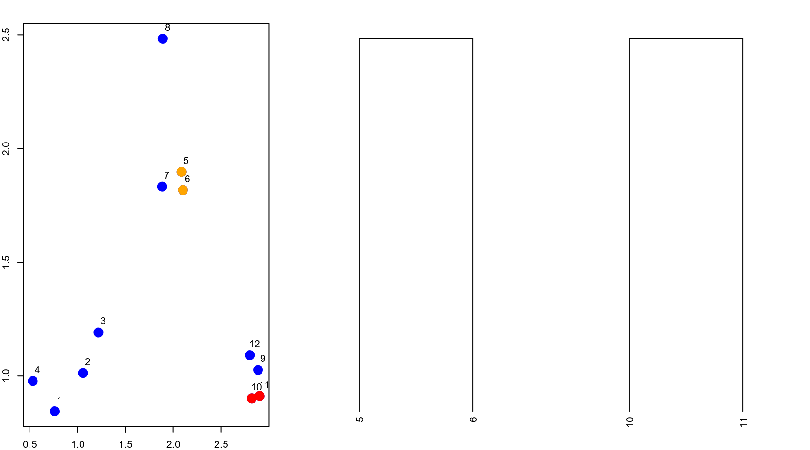
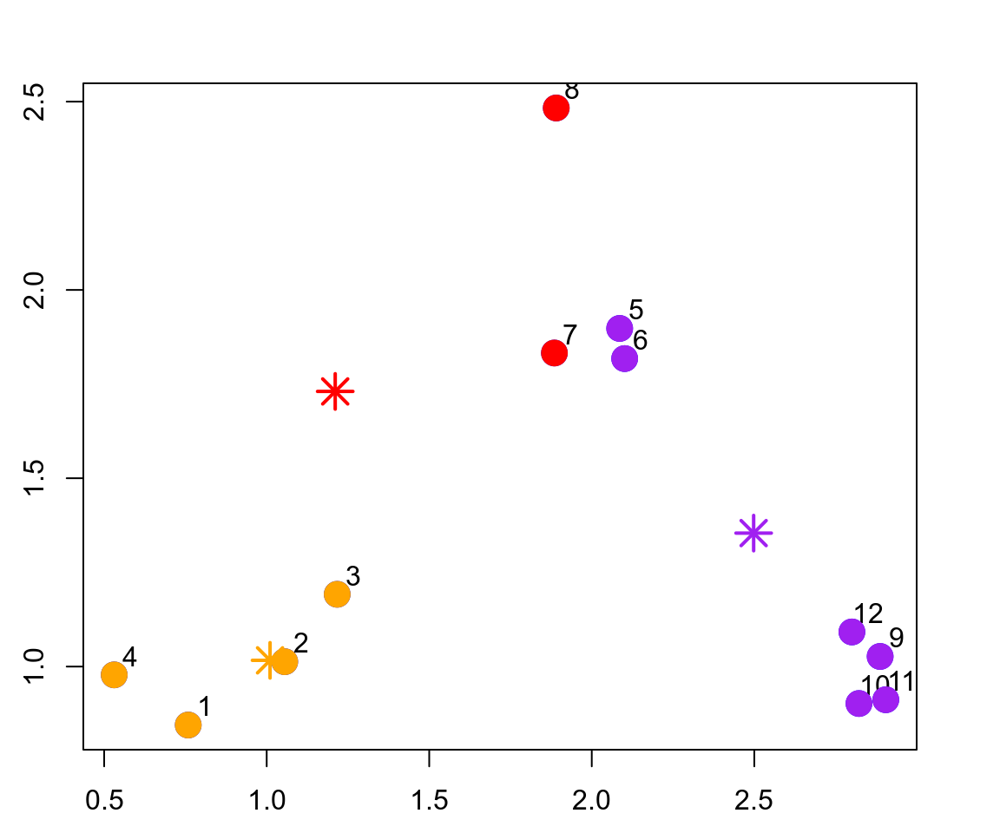
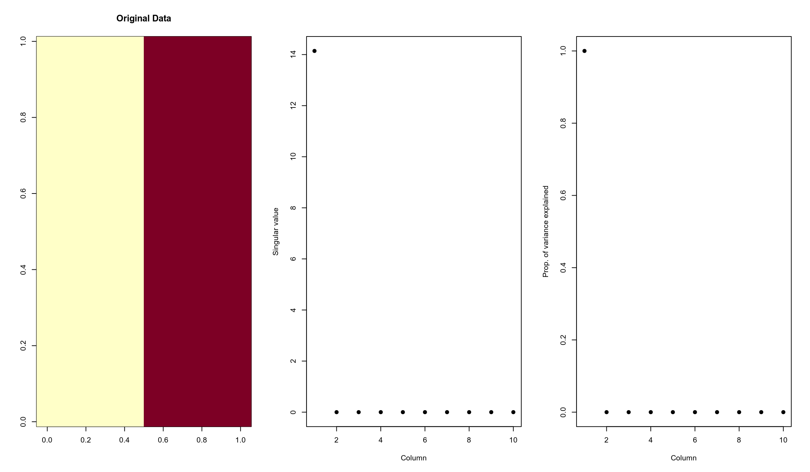

Exploratory Data Analysis Course - Module 3
- 1 Hierarchical Clustering.
- 1.1 The three aspects of hierarchical clustering.
- 1.2 Example distances.
- 1.3 Hierarchical clustering
example.
- 1.3.1 First step: calculating the
distance matrix with
dist(). - 1.3.2 Finding the two closest points.
- 1.3.3 Merging those two closest points
and begin building the tree:
hclust()andas.dendrogram(). - 1.3.4 Restarting the algorithm: the next pair of closest points and its merged tree leaves.
- 1.3.5 Stopping the algorithm.
- 1.3.1 First step: calculating the
distance matrix with
- 1.4 The entire tree (dendrogram) at
once, with
hclust(). - 1.5 Prettier dendrograms.
- 1.6 The agglomeration methods.
- 1.7 The
heatmap()function. - 1.8 Final notes and further resources.
- 2 K-Means Culstering.
- 3 Dimension Reduction: Singular Value
Decomposition -SVD- and Principal Components Analysis -PCA-.
- 3.1 SVD and PCA as statistical techniques for high-dimensional matrix data.
- 3.2 Simulating purely random matrix data.
- 3.3 Applying hierarchical clustering to explore the matrix data.
- 3.4 Adding a pattern to our matrix data to see what happens.
- 3.5 Applying hierarchical clustering to explore the matrix data.
- 3.6 General case: matrices with patterns in rows and columns.
- 3.7 More complex situations.
- 3.8 Related problems.
- 3.9 Related solutions: SVD and PCA.
- 3.10 Statistical interpretation of components of the SVD: variance explained by each singular value.
- 3.11 The related principal components
analysis -PCA-:
prcomp()function. - 3.12 What if we add a second pattern?
- 3.13 Dealing with missing values.
- 3.14 Face example: producing approximations with SVD.
- 3.15 Notes and further resources
- 4 Session Info.
1 Hierarchical Clustering.
Clustering or cluster analysis is a technique for visualizing high dimensional or multidimensional data.
- A really quick way to get a sense of what’s going on in a very high
dimensional dataset.
- A widely used technique, applied in many different areas of science, business and other applications.
1.1 The three aspects of hierarchical clustering.
1.1.1 What is it: an aglomerative approach.
Hierarchical clustering, as is denoted by the name, involves organizing our data into a kind of hierarchy.
The common approach is what’s called an agglomerative approach.
This is a kind of bottom up approach, where we start by thinking of the data as individual data points. Then we start lumping them together into clusters little by little until eventually our entire dataset is just one big cluster.
The algorithm is recursive and goes as follows:
- Find closest two things/points in your
dataset.
- Put them together and call them a
“point”.
- Use your new “dataset” with this new point and repeat.
- Find closest two things/points in your
dataset.
In short, Clustering organizes things (data/observations) that are close into groups.
1.1.2 What does it require: a closeness definition and a merging approach.
This methodology requires us to answer two questions:
- How do we define close?
- We have to pick-up a way to measure the distance
between two points, that make sense for our problem.
- The commonly used distance metrics (or
inversely similarity metrics) are:
- Euclidean distance:
- A continuous metric which can be thought of in geometric
terms as the straight-line distance between two points.
- A continuous metric which can be thought of in geometric
terms as the straight-line distance between two points.
- Correlation similarity:
- Also a continuous metric similar to Euclidean
distance.
- Also a continuous metric similar to Euclidean
distance.
- Manhattan distance:
- A binary metric that consist of the number of “city blocks”
on a grid or lattice, between two points.
- A binary metric that consist of the number of “city blocks”
on a grid or lattice, between two points.
- Euclidean distance:
- We have to pick-up a way to measure the distance
between two points, that make sense for our problem.
- How do we group things?
- In other words, have an approach to merging two points to create a new “point”.
1.1.3 What does it produce: a tree (dendrogram).
Other two questions that we are going to answer, are:
- How do we visualize the grouping in
hierarchical clustering?
- How do we interpret the grouping?
A benefit of the clustering methodology is that we can produce a tree showing how close things are to each other, which is simply a product of running the algorithm.
1.2 Example distances.
1.2.1 Euclidean distance.
For example, take two cities, say, Baltimore and Washington D.C., and put them on a map.
If we imagine that the center of each city has an X and a Y coordinate (longitude and latitude) and we want to map the distance between the centers of the two cities, then we can draw a straight diagonal line between the two cities.
The distance can be calculated in the usual way:
\[\sqrt{(X_1-X_2)^2 + (Y_1-Y_2)^2}\]
One nice feature of Euclidean distance is that it’s easily generalizable to higher dimensions.
In general, given two points in an n-dimensional space \[A = (A_1, A_2, \ldots, A_n)\] and \[B = (B_1, B_2, \ldots, B_n)\] the Eculidean distance between them is: \[\sqrt{(A_1-B_1)^2 + (A_2-B_2)^2 + \ldots + (A_n-B_n)^2}\]
1.2.2 Manhattan distance.
The Manhattan distance gets its name from the idea that you can look at points as being on a grid or lattice, like the grid making up the streets of Manhattan in New York City.

- The red, blue and yellow lines show various way of getting between
the two black circles using the grid layout.
- While the green line shows the Euclidean distance.
The Manhattan distance between the points is simply the sum of the right-left moves plus the sum of all the up-down moves on the grid.
In general: \[|A_1-B_1| + |A_2-B_2| + \ldots + |A_n-B_n|\]
1.3 Hierarchical clustering example.
Let’s simulate some data in three separate clusters.
set.seed(1234)
x <- rnorm(12, mean = rep(1:3, each = 4), sd = 0.2)
y <- rnorm(12, mean = rep(c(1,2,1), each = 4), sd = 0.2)
plot(x, y, col = "blue", pch = 19, cex = 2)
text(x+0.05, y+0.05, labels = as.character(1:12))1.3.1 First step:
calculating the distance matrix with dist().
The first step in the basic clustering approach is to calculate the distance between every point with every other point.
- The result is a distance
matrix.
- Notice:
- Usually we will not have to explicitly compute the distance
matrix (unless we are inventing our own clustering method).
- Here we’re just showing what’s going on internally.
- Usually we will not have to explicitly compute the distance
matrix (unless we are inventing our own clustering method).
The distance matrix can be computed with the
dist() function in R.
str(dist)
function (x, method = "euclidean", diag = FALSE, upper = FALSE, p = 2) xcan be a numeric matix or data frame.
methodis the distance measure to be used, and must be one of:- “euclidean”, “maximum”, “manhattan”, “canberra”, “binary” or
“minkowski”.
- The default distance metric is Euclidean
distance.
- “euclidean”, “maximum”, “manhattan”, “canberra”, “binary” or
“minkowski”.
- This function computes the distances between the
rows of
xand returns an object of classdist.
Turning back to our example, let’s calculate it’s associated distance matrix.
dataFrame <- data.frame(x = x, y = y)
dist(dataFrame)
1 2 3 4 5 6 7
2 0.34120511
3 0.57493739 0.24102750
4 0.26381786 0.52578819 0.71861759
5 1.69424700 1.35818182 1.11952883 1.80666768
6 1.65812902 1.31960442 1.08338841 1.78081321 0.08150268
7 1.49823399 1.16620981 0.92568723 1.60131659 0.21110433 0.21666557
8 1.99149025 1.69093111 1.45648906 2.02849490 0.61704200 0.69791931 0.65062566
9 2.13629539 1.83167669 1.67835968 2.35675598 1.18349654 1.11500116 1.28582631
10 2.06419586 1.76999236 1.63109790 2.29239480 1.23847877 1.16550201 1.32063059
11 2.14702468 1.85183204 1.71074417 2.37461984 1.28153948 1.21077373 1.37369662
12 2.05664233 1.74662555 1.58658782 2.27232243 1.07700974 1.00777231 1.17740375
8 9 10 11
2
3
4
5
6
7
8
9 1.76460709
10 1.83517785 0.14090406
11 1.86999431 0.11624471 0.08317570
12 1.66223814 0.10848966 0.19128645 0.20802789- The output is a lower triangular matrix with rows
numbered from 2 to 12 and columns numbered from 1 to 11.
- Entry (i,j) indicates the distance between points i and j.
- Clearly we need only a lower triangular matrix since the distance between points i and j equals that between j and i.
1.3.2 Finding the two closest points.
As we know, an agglomerative clustering approach attempts to find the two points that are closest together.
- In other words, we want to find the smallest non-zero entry in the distance matrix.
rdistxy <- as.matrix(dist(dataFrame))
## Remove the diagonal from consideration
diag(rdistxy) <- diag(rdistxy) + 1e5
# Find the index of the points with minimum distance
ind <- which(rdistxy == min(rdistxy), arr.ind=TRUE)
ind
row col
6 6 5
5 5 6Now we can plot the points and show which two points are closest together according to our distance metric.
plot(x, y, col = "blue", pch = 19, cex = 2)
text(x + 0.05, y + 0.05, labels = as.character(1:12))
points(x[ind[1, ]], y[ind[1, ]], col = "orange", pch = 19, cex = 2)1.3.3 Merging those two
closest points and begin building the tree: hclust() and
as.dendrogram().
The next step for the algorithm is to start drawing the tree, the first step of which would be to “merge” these two points together.
par(mfrow = c(1, 2), mar = c(2, 2, 2, 0.3))
plot(x, y, col = "blue", pch = 19, cex = 2, main = "Data")
text(x + 0.05, y + 0.05, labels = as.character(1:12))
points(x[ind[1, ]], y[ind[1, ]], col = "orange", pch = 19, cex = 2)
points(mean(x[ind[1, ]]), mean(y[ind[1, ]]), col = "black", cex = 3, lwd = 2, pch = 3)
points(mean(x[ind[1, ]]), mean(y[ind[1, ]]), col = "orange", cex = 5, lwd = 2, pch = 1)
# Make a cluster and cut it at the right height
library(dplyr)
hcluster <- dist(dataFrame) %>% hclust
dendro <- as.dendrogram(hcluster)
cutDendro <- cut(dendro, h = (hcluster$height[1] + 0.00001))
plot(cutDendro$lower[[11]], yaxt = "n", main = "Begin building tree")1.3.4 Restarting the algorithm: the next pair of closest points and its merged tree leaves.
Now that we’ve merged the first two “leaves” of this tree, we can re-run the algorithm and continue to build the tree.
We need to search the distance matrix for the next two closest points, ignoring the first two that we already merged.
nextmin <- rdistxy[order(rdistxy)][3]
ind <- which(rdistxy == nextmin, arr.ind = TRUE)
ind
row col
11 11 10
10 10 11Now we can plot the data with this next pair of points and the merged tree leaves.
# Plot the points with the minimum overlayed
par(mfrow = c(1, 3), mar = c(2, 2, 2, 0.1))
plot(x, y, col = "blue", pch = 19, cex = 2)
text(x + 0.05, y + 0.05, labels = as.character(1:12))
points(x[c(5, 6)], y[c(5, 6)], col = "orange", pch = 19, cex = 2)
points(x[ind[1, ]], y[ind[1, ]], col = "red", pch = 19, cex = 2)
# Make dendogram plots
library(dplyr)
hcluster <- dist(dataFrame) %>% hclust
dendro <- as.dendrogram(hcluster)
cutDendro <- cut(dendro, h = (hcluster$height[2]))
plot(cutDendro$lower[[10]], yaxt = "n")
plot(cutDendro$lower[[5]], yaxt = "n")
And on and on in this manner.
1.3.5 Stopping the algorithm.
So, hierarchical clustering is about finding the closest two points and put them together in one cluster, then find the next closest pair in the updated picture, and so forth.
We’ll repeat this process until we reach a reasonable stopping place.
What does reasonable mean?
- There’s a lot of flexibility in this field and how we perform our
analysis depends on our problem.
- Wikipedia tells us: “one can decide to stop clustering either when the clusters are too far apart to be merged (distance criterion) or when there is a sufficiently small number of clusters (number criterion).
1.4 The entire tree
(dendrogram) at once, with hclust().
If we were to continue in this fashion –identifying the two closest points and merging them-, we’d end up with a dendrogram that looks like the one that follows.
In fact, that’s what the hclust() function we ran
before, does at once:
str(hclust)
List of 7
$ merge : int [1:11, 1:2] -5 -10 -9 2 -7 -2 -1 -8 6 4 ...
$ height : num [1:11] 0.0815 0.0832 0.1085 0.208 0.2167 ...
$ order : int [1:12] 2 3 1 4 10 11 9 12 8 7 ...
$ labels : NULL
$ method : chr "complete"
$ call : language hclust(d = .)
$ dist.method: chr "euclidean"
- attr(*, "class")= chr "hclust"- It takes as an argument the pairwise distance matrix which
we looked at before.
- It applies the the clustering algorithm and returns the
corrisponding dendrogram.
- As we’ll see below, there are different agglomeration
methods that can be specified through the
methodparameter, as one of:- ward.D”, “ward.D2”, “single”, “complete”, “average” (= UPGMA),
“mcquitty” (= WPGMA), “median” (= WPGMC) or “centroid” (= UPGMC).
- The default grouping method is complete.
- ward.D”, “ward.D2”, “single”, “complete”, “average” (= UPGMA),
“mcquitty” (= WPGMA), “median” (= WPGMC) or “centroid” (= UPGMC).
library(dplyr)
hclust <- data.frame (x = x, y = y) %>% dist %>% hclust
hclust
Call:
hclust(d = .)
Cluster method : complete
Distance : euclidean
Number of objects: 12
plot(hclust)- The plot conveniently labeled everything for us.
- The points we saw are the leaves at the
bottom of the graph.
- Points 5 and 6 are connected, as are 10 and 11. Moreover, we see that the original 3 groupings of points are closest together as leaves on the picture. In other words, from the tree/dendrogram it’s clear that there are three clusters each with four points.
1.4.1 How to determine how many clusters are there?
One of the things about the dendrogram that’s produced by the clustering algorithm is that it doesn’t actually tell us how many clusters there are.
- There’s no specific label on the plot that tells us there are two clusters or three clusters or whatever.
And so, we have to “cut” this tree at a certain point to determine how many clusters there are.
- For example, if we cut it at the point labeled 2.0 on the y-axis or,
in other terms, if we draw a horizontal line at the hight of
2.0, then we determine that there are two branches, and
that would indicate us that there are roughly two
clusters.
- However, if we draw a horizontal line at the height of 1.0,
then we would see that we run into three branches, so that
would tell us that there are roughly three clusters.
- So depending on where we want to draw that horizontal line at the
tree we’ll get more or fewer clusters in our clustering.
- Of course, in the extreme case if we were to cut the tree
at the bottom we’d just get 12 clusters, which equals the number of data
points.
- Of course, in the extreme case if we were to cut the tree
at the bottom we’d just get 12 clusters, which equals the number of data
points.
- In summary, we have to cut the tree at a place that’s convenient for us. We don’t really have a rule of where to cut it but, once we do cut it, then we can get the cluster assignment from hierarchical clustering.
1.4.2 Adjusting a bit the plotting of the dendrogram and cutting it with horizontal lines.
We can “adjust” a little bit the dendrogram plot, by doing like this:
plot(as.dendrogram(hclust))- The essentials are the same, but the labels are missing and
the leaves (original points) are all printed at the same
level.
- Notice that the vertical heights of the lines and labeling of the scale on the left edge give some indication of distance.
And we can use abline() command to cut (draw a
horizontal line) at different hights or distances (1.5, 0.4 and 0.05) on
this plot.
plot(as.dendrogram(hclust))
abline(h = 1.5, col = "blue")
abline(h = 0.4, col = "red")
abline(h = 0.05, col = "green")- We see that the blue line intersects 3 vertical lines and this tells
us that using the distance 1.5 gives us 3 clusters:
- 1 through 4,
- 9 through 12, and
- 5 through 8.
- 1 through 4,
- By cutting at 0.4 we have 5 clusters, indicating that this
distance is small enough to break up
our original grouping of points.
- The shortest distance between two points was around 0.08, so cutting at distance smaller than that (like the green line at 0.05) would make all the points their own private clusters.
1.4.3 The heights of horizontal lines in a dendrogram are distances.
If we look at the height of the horizontal lines that are part of the graph (dendrogram), we can see right away the distance between the two clusters (or “points”) that are linked together by that horizontal line.
- As we know, that distance is, by default, the distance determined by the complete linkage method of agglomeration.
In our example, for instance:
The distance between points 5 and 6 is arround 0.8, which is the height of the horizontal line that links those two points together.
Similarly the cluster of points 5 through 8 and the cluster of points 9 through 12 are connected by a horizontal line that has a height of about 1.8, so that’s the (“complete”) distance that separates those clusters.
- In fact, we can see in the distances matix that we calculated before that the distance between the two farthest points of these clusters (points 8 and 11) is 1.86999431.
1.5 Prettier dendrograms.
1.5.1 A custom function
that add colors to the output of hclust().
It’s possible to make slightly prettier dendrograms with some
modification to the usual plot()
method for the output of hclust().
- There’s a
plclust()function, but it’s been deprecated for a long time.
Here’s a function that takes the output of hclust() and
color codes each of the leafs (each of the cluster
members by their cluster membership).
myplclust <- function(hclust, lab = hclust$labels,
lab.col = rep(1, length(hclust$labels)),
hang = 0.1,
...){
## Modifiction of plot() for plotting hclust objects *in colour*!
## Copyright Eva KF Chan 2009
## Arguments:
## hclust: hclust object
## lab: a character vector of labels of the leaves of the tree
## lab.col: colour for the labels; NA=default device foreground colour
## hang: as in hclust & plclust (the fraction of the plot height by
## which labels should hang below the rest of the plot; a negative
## value will cause the labels to hang down from 0)
## Side effect:
## A display of hierarchical cluster with coloured leaf labels.
y <- rep(hclust$height, 2)
x <- as.numeric(hclust$merge)
y <- y[which(x < 0)]
x <- x[which(x < 0)]
x <- abs(x)
y <- y[order(x)]
x <- x[order(x)]
plot(hclust, labels = FALSE, hang = hang, ...)
text(x = x, y = y[hclust$order]-(max(hclust$height)*hang),
labels = lab[hclust$order],
col = lab.col[hclust$order],
srt = 90, adj = c(1, 0.5), xpd = NA, ...)
}Let’s apply this function to our example:
library(dplyr)
hclust <- data.frame (x = x, y = y) %>% dist %>% hclust
myplclust(hclust, lab = rep(1:3, each = 4), lab.col = rep(1:3, each = 4))1.5.2 A lot of prettier dendrograms sources.
We can find a lot of dendrograms functions the following sources:
The
ggdendropackage from CRAN can be used to extract the plot data from dendrogram and for drawing a dendrogram usingggplot2.The
dendextendpackage contains many functions for changing the appearance of a dendrogram and for comparing dendrograms.
1.6 The agglomeration methods.
Let’s discuss how exactly the merging of clusters works.
Recall that once we find the two points that are closest together, we “merge” them and then consider the merged pair as a single “point”.
When we compare this merged “point” with other points, how should we measure the distance from one point to this merged cluster of points?
1.6.1 Complete linkage.
One method, called “complete”, is to measure the distance between two groups of points by the maximun distance between the two groups.
That is, take all points in group 1 and all points in group 2 and find the two points that are furthest apart.
That’s the distance between the groups.
Here’s what that would look like with our simulated data.
dataFrame <- data.frame(x = x, y = y)
par(mar = rep(2, 4))
plot(x, y, col = "blue", pch = 19, cex = 2)
points(x[8], y[8], col = "orange", pch = 3, lwd = 3, cex = 3)
points(x[1], y[1], col = "orange", pch = 3, lwd = 3, cex = 3)
segments(x[8], y[8], x[1], y[1], lwd = 3, col = "orange")1.6.2 Average linkage.
Another approach is “average” merging, which:
- takes the average of the coordinate values (which
we can think of the center of gravity) in each
group, and
- measures the distance between these two averages (two centers of gravity).
dataFrame <- data.frame(x = x, y = y)
par(mar = rep(2, 4))
plot(x, y, col = "blue", pch = 19, cex = 2)
points(mean(x[1:4]), mean(y[1:4]), col = "orange", pch = 3, lwd = 3, cex = 3)
points(mean(x[5:8]), mean(y[5:8]), col = "orange", pch = 3, lwd = 3, cex = 3)
segments(mean(x[1:4]), mean(y[1:4]), mean(x[5:8]), mean(y[5:8]), lwd = 3, col = "orange")1.6.3 Which method to choose?
We can see that in the complete linkage example that distance is relatively far, whereas in the average linkage example the distance is somewhat shorter.
There’s not a right or wrong method or way to do the merging.
- The point is to show that each of the two different merging
approaches can get to very different results.
- So it’s is often useful to try both approaches to see what kind of clustering results we get in the end and whether one set makes more sense than another.
1.7 The
heatmap() function.
The heatmap() function is a handy way to
visualize matrix data.
- If we have an extremely large table o matrix of numbers
that are similarly scaled and we want to just take
a look at them really quickly in an organized way, we can
call the
heatmap()function.
In general, Wikipedia tells us that a heat map is “a graphical representation of data where the individual values contained in a matrix are represented as colors …Heat maps originated in 2D displays of the values in a data matrix. Larger values were represented by small dark gray or black squares (pixels) and smaller values by lighter squares”.
What the heatmap() function does is essentially
runs a hierarchical cluster analysis on the
rows of the table and on the columns of the table:
It sorts the rows and columns of a matrix according to the clustering determined by a call to
hclust().It first treats the rows of a matrix as observations and calls
hclust()on them.Then it treats the columns of a matrix as observations and calls
hclust()on those values.The end result is that we get a dendrogram associated with both the rows and columns of a matrix, which can help us to spot obvious patterns in the data.
In other words, heatmap() uses
hclust() to organize the rows and
the columns of the tables so that we can
visualize them in groups or blocks of
observations within the table using the
image() function.
- So it creates a image plot, reording the columns and the rows of the table according to the hierarchical clustering algorithm.
library(dplyr)
dataMatrix <- data.frame(x = x, y = y) %>% data.matrix
heatmap(dataMatrix)- The rows and columns are grouped together as shown by colors.
- Here we can see that for example, along the rows we’ve got a
dendrogram which shows that there are probably three clusters, and those
rows are all grouped together.
- The top rows (labeled 5, 6 and 7) seem to be in the same group (same
colors) while 8 is next to them but colored differently.
- This matches the dendrogram shown on the left edge.
- Similarly, 9, 12, 11, and 10 are grouped together (row-wise) along
with 3 and 2.
- The top rows (labeled 5, 6 and 7) seem to be in the same group (same
colors) while 8 is next to them but colored differently.
- Then there are only two columns in the data frame. So it’s not
particularly interesting to do a hierarchical cluster analysis on that.
- But if we had many many columns, we would reorganize the columns so that the closer ones would be closer together and the farther ones would be farther apart.
1.7.1 A short tutorial for decent heat maps in R.
A very nice concise tutorial on creating heatmaps in R exists at:
http://sebastianraschka.com/Articles/heatmaps_in_r.html#clustering
1.8 Final notes and further resources.
Hierarchical clustering gives an idea of the relationships between variables/observations.
- We need to define a notion of what it means for two points to be
close or far apart.
- And we have to have a merging strategy.
- Given those two things, we can run the hierarchical clustering algorithm and it will produce a cluster dendrogram, which will show us how the merging is done or how the points got merged together through the algorithm.
- We need to define a notion of what it means for two points to be
close or far apart.
The produced picture may be unstable, in particular, may be sensitive to:
- Changing a few points in the dataset.
- For example, if we have some outliers and we remove them or modify
them a little bit, then the clustering dendrogram could change a
lot.
- For example, if we have some outliers and we remove them or modify
them a little bit, then the clustering dendrogram could change a
lot.
- Having different missing values in some of the observations.
- Picking a different distance metric (i.e. euclidean vs manhattan)
and changing the merging strategy (i.e. complete vs average).
- Often a useful thing is to try different distance metrics and
changing merging strategy, to see how sensitive it is (how picture
changes) to the different distance metrics and merging methods.
- Often a useful thing is to try different distance metrics and
changing merging strategy, to see how sensitive it is (how picture
changes) to the different distance metrics and merging methods.
- Changing the scale of points for one variable.
- If one variable, for example, is measured on units that are much
larger than another variable, then that can sometimes throw off the
algorithm.
- So, it may be useful to scale certain variables so that they’re better comparable to each other.
- If one variable, for example, is measured on units that are much
larger than another variable, then that can sometimes throw off the
algorithm.
- Changing a few points in the dataset.
Hierarchical clustering, at least the algorithm we’ve discussed before, is deterministic.
- There’s no random starting point, there’s no randomness in it.
- If we run it with the same parameters and the same data, it will give us the same picture.
- There’s no random starting point, there’s no randomness in it.
Choosing where to “cut” the tree to determine the number of clusters isn’t always obvious.
- A key question in any clustering approach is where to cut.
- The general idea is determining how many clusters there are.
- It’s not always obvious to figure out how many clusters there are. A number of algorithms that has been proposed, to try to figure that out.
- A key question in any clustering approach is where to cut.
Should be primarily used for exploration of data (once major patterns have been identified, it’s often best to delve further with other tools and formal modeling).
Some other resoruces:
2 K-Means Culstering.
The K-means clustering algorithm is another bread-and-butter algorithm in high- dimensional data analysis, that dates back many decades now.
The K-means approach, like many clustering methods, is highly algorithmic (can’t be summarized in a formula) and is iterative.
And, as a clustering procedure, it’s essentially useful to determine what kinds of observations are similar to each other and what kind of observations are very different from each other.
2.1 The three aspects of k-means clustering.
2.1.1 What is it: a partitioning approach.
The K-means approach is a partitioning approach, whereby the data (observations) are partitioned into groups at each iteration of the algorithm.
- In short, a way of partitioning a group of observations into a fixed number of clusters.
The basic idea is that we are trying to find the centroids of a fixed number of clusters of points in a high-dimensional space.
- In two dimensions, we can imagine that there are a bunch of
clouds of points on the plane and we want to figure out where the
centers of each one of those clouds is.
- Of course, in two dimensions, we could probably just look at the
data and figure out with a high degree of accuracy where the cluster
centroids are.
- But what if the data are in a 100-dimensional space? That’s where we need an algorithm.
The outline of the algorithm is:
- Fix the number of clusters at some integer greater than or equal to
2.
- Start with the “centroids” of each cluster.
- Initially we might just pick a random set of “phantom points” as the
centroids.
- Initially we might just pick a random set of “phantom points” as the
centroids.
- Assign points to their closest centroid (cluster membership
corresponds to the centroid assignment).
- R documentation tells us that the k-means method aims to
partition the points into k groups such that
the sum of squares from points to the assigned
cluster centres is minimized”.
- R documentation tells us that the k-means method aims to
partition the points into k groups such that
the sum of squares from points to the assigned
cluster centres is minimized”.
- Reclaculate centroid positions by making it the average of the points assigned to each centroid and repeat from step 3.
2.1.2 What does it require: a distance metric, a fixed number of clusters and an initial centroids guess.
This approach, like most clustering methods requires:
- A defined distance metric.
- A fixed number of clusters.
- Of course, this may not be known in advance, but we can guess and
just run the algorithm anyway.
- Afterwards, we can change the number of clusters and run the
algorithm again to see if anything changes.
- There are though a number of algorithms to pick the number of
clusters up: cross validation/information theory, etc.
- Of course, this may not be known in advance, but we can guess and
just run the algorithm anyway.
- And an initial guess as to the cluster
centriods.
- There’s no set approach to determining the initial configuration of centroids, but many algorithms simply randomly select data points from your dataset as the initial centroids.
2.1.3 What does it produce: final estimate of cluster centroids and points assignment
The K-means algorithm produces:
- A final estimate of cluster centroids (i.e. their
coordinates).
- An assignment of each point to their respective clusters.
2.2 K-means clustering example.
Let’s simulate the same data we used as running example before with hierarchical clustering, that is, some data in three separate clusters.
set.seed(1234)
x <- rnorm(12, mean = rep(1:3, each = 4), sd = 0.2)
y <- rnorm(12, mean = rep(c(1,2,1), each = 4), sd = 0.2)
plot(x, y, col = "blue", pch = 19, cex = 2)
text(x + 0.05, y + 0.05, labels = as.character(1:12))
2.2.1 First step: starting centroids.
The first thing K-means has to do is assign an initial set of centroids.
For this example:
- We will assume that there are three clusters (which
also happens to be the truth).
- We will choose three centroids arbitrarily and show them in the plot below.
par(mar = rep(2.5, 4))
plot(x, y, col = "blue", pch = 19, cex = 2)
text(x + 0.05, y + 0.05,labels = as.character(1:12))
cx <- c(1, 1.8, 2.5)
cy <- c(2, 1, 1.5)
points(cx, cy, col = c("red","orange","purple"), pch = 3, cex = 2, lwd = 2)2.2.2 Assigning points to closest centroid.
The next stage in the algorithm assigns every point in the dataset to the closest centroid.
To do that, we have to calculate the (Euclidean) distances:
- 12 points x 3 centroids = 36 distances
In the plot below, we color each point according to the color of its closest centroid (red, purple or orange).
par(mar = rep(2.5, 4))
plot(x, y, col = "blue", pch = 19, cex = 2)
cols1 <- c("red", "orange", "purple")
text(x + 0.05, y + 0.05, labels = as.character(1:12))
cx <- c(1, 1.8, 2.5)
cy <- c(2, 1, 1.5)
points(cx, cy, col = cols1, pch = 3, cex = 2, lwd = 2)
## Find the closest centroid
### Find the distance of each of 12 points from each of 3 centroids
### (store the results in a 3 x 12 matrix, the rows are the centroids
### and the columns are the points).
distTmp <- matrix(NA, nrow = 3, ncol = 12)
distTmp[1, ] <- (x-cx[1])^2 + (y-cy[1])^2
distTmp[2, ] <- (x-cx[2])^2 + (y-cy[2])^2
distTmp[3, ] <- (x-cx[3])^2 + (y-cy[3])^2
distTmp
[,1] [,2] [,3] [,4] [,5] [,6] [,7]
[1,] 1.392885 0.9774614 0.7000680 1.264693 1.1894610 1.2458771 0.8113513
[2,] 1.108644 0.5544675 0.3768445 1.611202 0.8877373 0.7594611 0.7003994
[3,] 3.461873 2.3238956 1.7413021 4.150054 0.3297843 0.2600045 0.4887610
[,8] [,9] [,10] [,11] [,12]
[1,] 1.026750 4.5082665 4.5255617 4.8113368 4.0657750
[2,] 2.208006 1.1825265 1.0540994 1.2278193 1.0090944
[3,] 1.337896 0.3737554 0.4614472 0.5095428 0.2567247
### Assign a cluster to each point (look at each column and pick the
### minimum entry)
newClust <- apply(distTmp, 2, which.min)
newClust
[1] 2 2 2 1 3 3 3 1 3 3 3 3
points(x, y, pch = 19, cex = 2, col = cols1[newClust])- So this is the initial grouping of the points to the three
different clusters.
- We can see that this initial clustering incorrectly
clusters some points that are truly in the same cluster to
separate clusters.
- The hope is that iterating algorithm more times that we will eventually converge on the correct solution.
2.2.3 Recalculating centroids.
The next stage is re-calculate the centroids based on the new cluster assignments of the data points.
- Once we every point is assigned to a cluster, we can recalculate the centroids for example by taking the mean of that cluster.
par(mar = rep(2.5, 4))
plot(x, y, col = "blue", pch = 19, cex = 2)
cols1 <- c("red", "orange", "purple")
text(x + 0.05, y + 0.05, labels = as.character(1:12))
## Find the closest centroid
distTmp <- matrix(NA, nrow = 3, ncol = 12)
distTmp[1, ] <- (x-cx[1])^2 + (y-cy[1])^2
distTmp[2, ] <- (x-cx[2])^2 + (y-cy[2])^2
distTmp[3, ] <- (x-cx[3])^2 + (y-cy[3])^2
newClust <- apply(distTmp, 2, which.min)
points(x, y, pch = 19, cex = 2, col = cols1[newClust])
## Old centroids
cx <- c(1, 1.8, 2.5)
cy <- c(2, 1, 1.5)
## New centroids
newCx <- tapply(x, newClust, mean)
newCx
1 2 3
1.210767 1.010320 2.498011
newCy <- tapply(y, newClust, mean)
newCy
1 2 3
1.730555 1.016513 1.354373
## Plotting both ols and new centroids.
points(cx, cy, col = cols1, pch = 3, cex = 2, lwd = 2)
points(newCx, newCy, col = cols1, pch = 8, cex = 2, lwd = 2)- In fact, by taking the mean, we can see that the purple pluses has moved slightly to be in the middle of that cluster. The red plus has moved a little bit to be in the middle of that cluster. And the orange one is now in the middle of the three orange dots.
2.2.4 Reassigning values and updating centroids.
Now we have completed one full cycle of the algorithm, we can continue and re-assign points to their (new) closest cluster centroid.
par(mar = rep(2.5, 4))
plot(x, y, col = "blue", pch = 19, cex = 2)
cols1 <- c("red", "orange", "purple")
text(x + 0.05, y + 0.05, labels = as.character(1:12))
## Find the closest centroid
distTmp <- matrix(NA, nrow = 3, ncol = 12)
distTmp[1, ] <- (x-cx[1])^2 + (y-cy[1])^2
distTmp[2, ] <- (x-cx[2])^2 + (y-cy[2])^2
distTmp[3, ] <- (x-cx[3])^2 + (y-cy[3])^2
newClust <- apply(distTmp, 2, which.min)
newClust
[1] 2 2 2 1 3 3 3 1 3 3 3 3
## Old centroids
cx <- c(1, 1.8, 2.5)
cy <- c(2, 1, 1.5)
## New centroids
newCx <- tapply(x, newClust, mean)
newCy <- tapply(y, newClust, mean)
points(newCx, newCy, col = cols1, pch = 8, cex = 2, lwd = 2)
## Iteration 2
distTmp <- matrix(NA, nrow = 3, ncol = 12)
distTmp[1, ] <- (x-newCx[1])^2 + (y-newCy[1])^2
distTmp[2, ] <- (x-newCx[2])^2 + (y-newCy[2])^2
distTmp[3, ] <- (x-newCx[3])^2 + (y-newCy[3])^2
newClust2 <- apply(distTmp, 2, which.min)
newClust2
[1] 2 2 2 2 3 3 1 1 3 3 3 3
points(x, y , pch = 19, cex = 2, col = cols1[newClust2])
And we can update the centroid positions one more time based on the re-assigned points.
par(mar = rep(2.5, 4))
plot(x, y, col = "blue", pch = 19, cex = 2)
cols1 <- c("red", "orange", "purple")
text(x + 0.05, y + 0.05, labels = as.character(1:12))
## Find the closest centroid
distTmp <- matrix(NA, nrow = 3, ncol = 12)
distTmp[1, ] <- (x-cx[1])^2 + (y-cy[1])^2
distTmp[2, ] <- (x-cx[2])^2 + (y-cy[2])^2
distTmp[3, ] <- (x-cx[3])^2 + (y-cy[3])^2
newClust <- apply(distTmp, 2, which.min)
newClust
[1] 2 2 2 1 3 3 3 1 3 3 3 3
## Old centroids
cx <- c(1, 1.8, 2.5)
cy <- c(2, 1, 1.5)
points(cx, cy, col = cols1, pch = 3, cex = 2, lwd = 2)
## New Old centroids
newCx <- tapply(x, newClust, mean)
newCy <- tapply(y, newClust, mean)
points(newCx, newCy, col = cols1, pch = 8, cex = 2, lwd = 2)
## Iteration 2
distTmp <- matrix( NA, nrow = 3, ncol = 12)
distTmp[1, ] <- (x-newCx[1])^2 + (y-newCy[1])^2
distTmp[2, ] <- (x-newCx[2])^2 + (y-newCy[2])^2
distTmp[3, ] <- (x-newCx[3])^2 + (y-newCy[3])^2
finalClust <- apply(distTmp, 2, which.min)
finalClust
[1] 2 2 2 2 3 3 1 1 3 3 3 3
## Final centroids
finalCx <- tapply(x, finalClust, mean)
finalCy <- tapply(y, finalClust, mean)
points(finalCx, finalCy, col = cols1, pch = 9, cex = 2, lwd = 2)
points(x, y, pch = 19, cex = 2, col = cols1[finalClust])- We can see from this last plot that things are actually pretty close
to where they should be.
- There are just two purple points that have been assigned to the wrong cluster.
2.2.5 Stopping the algorithm.
In practice, we would not know where the actual clusters were, so we wouldn’t necessarily know when we were close to the truth.
But eventually our algorithm needs to stop, so how do we decide when to stop iterating?
- At some point the cluster centroids will stabilize and
stop moving with each iteration.
- We could see that, from the first iteration to the second iteration,
the cluster centroids moved a lot. But after the second iteration, they
moved less.
- Between each iteration we can keep track of the
distance that each centroid moves from one iteration to the
next.
- Once this distance is relatively small, we can stop the algorithm.
So the process stops once we reach an iteration in which no adjustments are made or when we’ve reached some predetermined maximum number of iterations.
2.2.6 The algorithm at
once with kmeans() function.
The kmeans() function in R implements the K-means
algorithm.
str(kmeans)
function (x, centers, iter.max = 10L, nstart = 1L, algorithm = c("Hartigan-Wong",
"Lloyd", "Forgy", "MacQueen"), trace = FALSE) xis a matrix or data frame of data.- The data should be organized so that each row is an observation and
each column is a variable or feature of that observation.
- The data should be organized so that each row is an observation and
each column is a variable or feature of that observation.
centersis either:- an integer indicating the number of clusters, or
- or a matrix indicating the locations of the initial cluster
centroids.
- an integer indicating the number of clusters, or
iter.maxspecifies the maximum number of iterations to go through.
nstartis the number of random starts we want to try if we specify centers as a number.
dataFrame <- data.frame(x, y)
kmeansObj <- kmeans(dataFrame, centers = 3, nstart = 2)
kmeansObj
K-means clustering with 3 clusters of sizes 4, 4, 4
Cluster means:
x y
1 1.9906904 2.0078229
2 2.8534966 0.9831222
3 0.8904553 1.0068707
Clustering vector:
[1] 3 3 3 3 1 1 1 1 2 2 2 2
Within cluster sum of squares by cluster:
[1] 0.34732441 0.03298027 0.34188313
(between_SS / total_SS = 93.6 %)
Available components:
[1] "cluster" "centers" "totss" "withinss" "tot.withinss"
[6] "betweenss" "size" "iter" "ifault"
kmeansObj$centers
x y
1 1.9906904 2.0078229
2 2.8534966 0.9831222
3 0.8904553 1.0068707
kmeansObj$cluster
[1] 3 3 3 3 1 1 1 1 2 2 2 2
kmeansObj$iter
[1] 1kmeansreturns the information that the data clustered into 3 clusters each of size 4.
- It also returns the coordinates of the 3 cluster means.
- A vector named
clusterindicating how the 12 points were partitioned into the clusters.
- The sum of squares within each cluster.
itershows how many iterations the algorithm went through.- Two iterations as we did before.
Here is a plot of the K-means clustering solution.
par(mar = rep(2.5, 4))
plot(x, y, col = kmeansObj$cluster, pch = 19, cex = 2)
points(kmeansObj$centers, col = 1:3, pch = 3, cex = 3, lwd = 3)
- Not surprisingly for this simple dataset, K-means was able to identify the true solution.
2.3 Building heatmaps from K-means solutions.
A heatmap or image plot is sometimes a useful way to visualize matrix or array data.
The idea is that each cell of the image is colored in a manner proportional to the value in the corresponding matrix element.
It take a bit of work to get this to look right in R but the result can be very useful, especially for high-dimensional datasets that can be visualized using the simple plots we used above.
First, let’s find a K-means solution to a different dataset obtained from our previous one after randomly reordering the rows.
set.seed(1234)
dataMatrix <- as.matrix(dataFrame)[sample(1:12), ]
kmeansObj <- kmeans(dataMatrix, centers = 3)Then we can make an image() plot using
the K-means clusters.
par(mfrow = c(1, 2), mar = c(2, 1, 2, 1))
image(t(dataMatrix)[ , nrow(dataMatrix):1], yaxt = "n", main = "Original Data")
image(t(dataMatrix)[ , order(kmeansObj$cluster)], yaxt = "n", main = "Clustered Data")- The plot above orders the rows of the matrix/image so that
all of the rows in the same cluster are grouped
together.
- We can see this with the more homogeneous nature of the coloring in the clustered version of the image.
2.4 Notes and further resources.
- K-means requires a number of clusters
- Pick by eye/intuition
- Pick by cross validation/information theory, etc.
- Determining the number of clusters
- K-means is not deterministic
- Different number of clusters
- Different number of iterations
- Rafael Irizarry’s Distances and Clustering Video
- Elements of statistical learning
3 Dimension Reduction: Singular Value Decomposition -SVD- and Principal Components Analysis -PCA-.
Singular Value Decomposition (SVD) and Principal Components Analysis (PCA) are a really important statistical dimension reduction techniques.
They can be applied both in the exploratory data analysis phase, and also, in the more formal modeling phase.
Here we’re going to see a little bit about how those techniques are used in the exploratory phase and a bit about their underlying basis.
3.1 SVD and PCA as statistical techniques for high-dimensional matrix data.
Matrix data have some special statistical methods that can be applied to them.
Principal components analysis (PCA) and the singular value decomposition (SVD) are one category of statistical dimension reduction techniques that can be applied to matrices.
These techniques generally are applied in situations where the rows of a matrix represent observations of some sort and the columns of the matrix represent features or variables (but this is by no means a requirement).
Let’s recall that the key aspect of matrix data is that every element of the matrix is the same type and represents the same kind of measurement.
- This is in contrast to a data frame, where every column of a data frame can potentially be of a different class.
In an abstract sense, the SVD or PCA can be thought of as a way to approximate a high-dimensional matrix with a a few low-dimensional matrices.
So in this section we’ll se how this works.
3.2 Simulating purely random matrix data.
Let’s begin simulating some purely random 40x10 matrix data.
set.seed(12345)
dataMatrix <- matrix(rnorm(400), nrow = 40)
image(1:10, 1:40, t(dataMatrix)[, nrow(dataMatrix):1])3.3 Applying hierarchical clustering to explore the matrix data.
When confronted with matrix data a quick and easy thing to organize the data a bit, is to apply a hierarchical clustering algorithm to it.
As we know, such a clustering can be visualized with the
heatmap() function.
heatmap(dataMatrix)Not surprisingly, there aren’t really any interesting patterns given that we just simulated random noise.
In other words, even with the clustering that heatmap provides, permuting the rows (observations) and columns (variables) independently, the data still looks random.
At least it’s good to know that the clustering algorithm won’t pick up something when there’s nothing there!
3.4 Adding a pattern to our matrix data to see what happens.
If our matrix data had a pattern, how would we discover it?
So let’s simulate some data that indeed does have a pattern.
- In the code below, we cycle through all the rows of the matrix and randomly add a constant -3- to the last 5 columns of the matrix.
set.seed(678910)
for(i in 1:40){
# flip a coin
coinFlip <- rbinom(1, size = 1, prob = 0.5)
# if coin is heads add a common pattern to that row
pattern <- rep(c(0, 3), each = 5)
if(coinFlip){
dataMatrix[i, ] <- dataMatrix[i, ] + pattern
}
}
image (1:10, 1:40, t(dataMatrix)[, nrow(dataMatrix):1])- We can clearly see that some of the rows on the right side of the matrix have higher values than on the left side.
3.5 Applying hierarchical clustering to explore the matrix data.
heatmap(dataMatrix)- We can see from the dendrogram on top of the matrix (for the
columns) that the columns pretty clearly split into two
clusters, which is what we’d expect.
- The rows still look random.
3.6 General case: matrices with patterns in rows and columns.
In general, with matrix data, there may be patterns that occur accross the rows and columns of the matrix.
We can take a closer look at the patterns by looking at the marginal means of the rows and columns.
In the example above, we shifted the mean of some of the observations in columns 5 through 10.
- We can display this a bit more explicitly by looking at the row and column means of the data.
library(dplyr)
hh <- dist(dataMatrix) %>% hclust
hh$order
[1] 33 39 20 26 32 17 1 19 2 18 9 24 35 25 13 3 23 36 37 14 31 21 10 30 5
[26] 29 4 34 11 8 15 12 28 7 22 27 16 40 6 38
dataMatrixOrdered <- dataMatrix[hh$order, ]
par(mfrow = c(1, 3))
## Complete data.
image(t(dataMatrixOrdered)[, nrow(dataMatrixOrdered):1])
## Show the row means.
plot(rowMeans(dataMatrixOrdered), 40:1, xlab = "Row Mean", ylab = "Row", pch = 19)
## Show the column means.
plot(colMeans(dataMatrixOrdered), xlab = "Column", ylab = "Column Mean", pch = 19)- In the middle plot, on the y-axis we’ve got the row number which
goes from 1 to 40, so that is roughly parallel with the image on the
left. And and on the x-axis we’ve got the mean of that row.
- So for example, we can see that for row 10 the mean is roughly minus
0.25 or something like that. For row 30 the mean is roughly 1.5.
- We see then that there’s a clear shift in the mean
as we go across the rows.
- Similarly, if we go across the columns, we can see there’s a
clear shift in the mean of each
column: the first 5 columns have roughly a mean of zero or close to it
and then the next 5 columns have roughly a mean of two because, there’s
a shift there.
- So using the plots in the middle and on the right, we can see a clear pattern in the rows and the columns.
3.7 More complex situations.
There may be other patterns beyond a simple mean shift.
- So more sophisticated methods will be needed.
Futhermore, there may be multiple patterns layered on top of each other.
- So we need a method that can distangle these patterns.
3.10 Statistical interpretation of components of the SVD: variance explained by each singular value.
Turning back to the meaning of the \(D\) matrix produced by the SVD, we can say then that the statistical interpretation of singular values is in the form of variance in the data explained by the various components.
The singular values produced by the svd()
function are in order from largest to smallest and
when squared are proportional to the
amount of variance explained by a given singular vector.
To show how this works, here’s a very simple example.
- First, we’ll simulate a “dataset” that just takes two values, 0 and 1.
constantMatrix <- dataMatrixOrdered * 0
for (i in 1:dim(dataMatrixOrdered)[1]) {
constantMatrix[i, ] <- rep(c(0, 1), each = 5)
}
head(constantMatrix)
[,1] [,2] [,3] [,4] [,5] [,6] [,7] [,8] [,9] [,10]
[1,] 0 0 0 0 0 1 1 1 1 1
[2,] 0 0 0 0 0 1 1 1 1 1
[3,] 0 0 0 0 0 1 1 1 1 1
[4,] 0 0 0 0 0 1 1 1 1 1
[5,] 0 0 0 0 0 1 1 1 1 1
[6,] 0 0 0 0 0 1 1 1 1 1- Then we can take the SVD of this matrix and show the singular values as well as the proportion of variance explained by each singular value.
svd2 <- svd(constantMatrix)
par(mfrow = c(1, 3))
image(t(constantMatrix)[, nrow(constantMatrix):1], main = "Original Data")
plot(svd2$d, xlab = "Column", ylab = "Singular value", pch = 19)
plot(svd2$d^2/sum(svd2$d^2), xlab = "Column", ylab = "Prop. of variance explained",
pch = 19)
- As we can see from the right-most plot, 100% of the
variation in this “dataset” is explained by
the first singular value.
- In other words, all of the variation in this
dataset occurs in a single
dimension.
- This is clear because all of the variation in the data occurs as we go from left to right across the columns. Otherwise, the values of the data are constant.
Turning back to our slightly more complex dataset that we’d been using previously, let’s plot the singular values (left) and the proportion of variance explained:
svd1 <- svd(scale(dataMatrixOrdered))
par(mfrow = c(1, 2))
plot(svd1$d, xlab = "Column", ylab = "Singular value", pch = 19)
plot(svd1$d^2/sum(svd1$d^2), xlab = "Column", ylab = "Prop. of variance explained",
pch = 19)- We can see that the first component explains
about 40% of all the variation in the
data.
- In other words, even though there are 10 dimensions in the data,
40% of the variation in the data can be explained
by a single dimension.
- That suggests that the data could be simplified quite a bit, a phenomenon we observed in the last section where it appeared the data could be reasonably approximated by the first left and right singular vectors.
3.12 What if we add a second pattern?
Tracking a single patter in a matrix is relatively straightforward, but typically there will be multiple layered patterns in a matrix of data.
Here we add two patterns to a simulated dataset.
One pattern simple adds a constant to the last 5 columns of data,
while the other pattern adds an alternating pattern (every other column).
set.seed(678910)
for(i in 1:40) {
# flip a coin
coinFlip1 <- rbinom(1, size = 1, prob = 0.5)
coinFlip2 <- rbinom(1, size = 1, prob = 0.5)
# if coin is heads add a common pattern to that row
if(coinFlip1){
dataMatrix[i, ] <- dataMatrix[i, ] + rep(c(0, 5), each = 5)
}
if(coinFlip2){
dataMatrix[i, ] <- dataMatrix[i, ] + rep(c(0, 5), 5)
}
}
hh <- hclust(dist(dataMatrix))
dataMatrixOrdered <- dataMatrix[hh$order, ]3.12.1 Plotting the true patterns which normally we ignore.
We can plot this new dataset along with the two different patterns that we know in advanced because we put them there.
par(mfrow = c(1, 3))
image(t(dataMatrixOrdered)[, nrow(dataMatrixOrdered):1], main = "Data")
plot(rep(c(0, 1), each = 5), pch = 19, xlab = "Column", ylab = "Pattern 1",
main = "Block pattern")
plot(rep(c(0, 1), 5), pch = 19, xlab = "Column", ylab = "Pattern 2",
main = "Alternating pattern")- The middle plot shows the true difference between the left and
right columns.
- The rightmost plot shows the true difference between the odd numbered and even-numbered columns.
3.12.2 Can SVD/PCA analysis detect these patterns just from the data?
3.12.2.1 \(V\) to pick up column patterns of variance.
Since we’re interested in patterns on columns we’ll look at the first two right singular vectors (columns of \(V\)) to see if they show any evidence of the patterns.
svd2 <- svd(scale(dataMatrixOrdered))
svd2$v[, 1:2]
[,1] [,2]
[1,] 0.06154540 0.142468636
[2,] 0.26433096 0.504510087
[3,] 0.04987554 0.316470664
[4,] 0.27693897 0.524499356
[5,] 0.14275820 -0.282921362
[6,] 0.43252652 -0.002280468
[7,] 0.37724057 -0.354403893
[8,] 0.43280767 0.039226153
[9,] 0.34912246 -0.376485206
[10,] 0.43379723 -0.031422705
par(mfrow = c(1, 3))
image(t(dataMatrixOrdered)[, nrow(dataMatrixOrdered):1], main = "Data")
plot(svd2$v[, 1], pch = 19, xlab = "Column", ylab = "First right singular vector")
plot(svd2$v[, 2], pch = 19, xlab = "Column", ylab = "Second right singular vector")- We can see that the first right singular vector seems to
pick up both the alternating pattern as well as the block/step pattern
in the data.
- The second right singular vector seems to pick up a similar
pattern.
- Making a closer inspection, we have:
- In the middle plot we can see that the last 5 columns have higher
entries than the first 5. This picks up, or at least alludes
to, the first pattern we added in which affected the last
5 columns of the matrix.
- The rightmost plot, showing the second column of \(V\), looks more random. However, we can see
that the entries alternate or bounce up and down as we move from left to
right. This hints at the second pattern we added in
which affected only even columns of selected rows.
- In the middle plot we can see that the last 5 columns have higher
entries than the first 5. This picks up, or at least alludes
to, the first pattern we added in which affected the last
5 columns of the matrix.
- This example is meant to show us that it’s hard to see patterns, even straightforward ones.
3.12.2.2 \(D\) and variance explained.
When we look at the variance explained, we can see that the first singular vector picks up a little more than 50% of the variation in the data.
svd1 <- svd(scale(dataMatrixOrdered))
par(mfrow = c(1, 2))
plot(svd1$d, xlab = "Column", ylab = "Singular value", pch = 19)
plot(svd1$d^2/sum(svd1$d^2), xlab = "Column", ylab = "Percent of variance explained",
pch = 19)- On the right-hand panel we can see that the first
component explains over 50% of the total variation in the
dataset.
- The second component only captures about 18% or so
of the variation and it kind of trails off from there.
- That indicates that the shift or block pattern is
stronger. It represents a large amount of variation in the data
set.
- Also the two patterns confound each other so they’re harder to separate and see clearly. This is what often happens with real data.
3.13 Dealing with missing values.
Missing values are a problem that plagues any data analysis and the analysis of matrix data is no exception.
Most SVD and PCA routines simply cannot be applied if there are missing values in the dataset.
In the event of missing data, there are typically a series of questions that should be asked:
- Determine the reason for the missing data; what is the process that
lead to the data being missing?
- Is the proportion of missing values so high as to invalidate any sort of analysis?
- Is there information in the dataset that would allow us to predict/infer the values of the missing data?
In the example below, we take our dataset and randomly insert some missing data.
dataMatrix2 <- dataMatrixOrdered
## Randomly insert some missing data
dataMatrix2[sample(1:100, size = 40, replace = FALSE)] <- NA
svd1 <- svd(scale(dataMatrix2)) ## Doesn't work!
Error in svd(scale(dataMatrix2)): infinite or missing values in 'x'3.13.1 The
impute package from Bioconductor.
Since in this case we know that the missing data appeared completely randomly in the data, it would make sense to try to impute the values so that we can run the SVD.
Here, we use the impute package to do a
k-nearest-neighbors imputation of the missing data:
impute.knn().
- The
imputepackage is available from Bioconductor.
- The
impute.knn()function takes missing values in a row and imputes it by the k nearest neighbors to that row. So ifkfor example is 5, then it will take the five rows that are closest to the row with the missing data, and then impute the data in that missing row with the average of the other five rows.
library(impute)
dataMatrix2 <- impute.knn(dataMatrix2)$data
svd1 <- svd(scale(dataMatrixOrdered))
svd2 <- svd(scale(dataMatrix2))
par(mfrow = c(1, 2))
plot(svd1$v[, 1], pch = 19, main = "Original dataset")
plot(svd2$v[, 1], pch = 19, main = "Imputed dataset")- We can see that the results are not identical but they are
pretty close, so imputation didn’t have a mayor effect
in the running of the SVD.
- Obviously, the missing data process was pretty simple in this case and is likely to be more complex in other situations.
3.14 Face example: producing approximations with SVD.
In this example, we use some data that make up an image of a face to:
show how the SVD can be used to produce varying approximations to this “dataset”;
show how SVD (and PCA) work as a data compression technique.
Here is the original data.
load("4_data/face.rda")
image(t(faceData)[, nrow(faceData):1])- We’ll use SVD and see how the first several components contain most of the information in the file so that storing a huge matrix might not be necessary.
3.14.1 Variance explained.
If we take the SVD and plot the squared and normalized singular values, we can see that the data can be explained by just a few singular vectors, maybe 4 or 5.
svd1 <- svd(scale(faceData))
plot(svd1$d^2/sum(svd1$d^2), pch = 19,
xlab = "Singular vector", ylab = "Variance explained")3.14.2 Create approximations.
Now we can start constructing approximations to the data using the left and right singular vectors.
Here we create one using just the first left and right singular vectors.
## Note that %*% is matrix multiplication. Here svd1$d[1] is a constant.
approx1 <- (svd1$u[, 1] * svd1$d[1]) %*% t(svd1$v[, 1])
## Equivalently:
approx1_eq <- svd1$u[, 1] %*% t(svd1$v[, 1]) * svd1$d[1]- NOTE that because of the peculiarities of R’s casting, if we do the
scalar multiplication with the
* operatorfirst (before the matrix multiplication with the%*% operator) we MUST enclose the 2 arguments (svd1$u[,1] and svd1$d[1]) in parentheses.
We can also create ones using 5 and 10 singular vectors, which presumably would be better approximations.
# In these examples we need to make the diagonal matrix out of d.
approx5 <- svd1$u[, 1:5] %*% diag(svd1$d[1:5]) %*% t(svd1$v[, 1:5])
approx10 <- svd1$u[, 1:10] %*% diag(svd1$d[1:10]) %*% t(svd1$v[, 1:10]) 3.14.3 Plot approximations.
par(mfrow = c(1, 4))
image(t(approx1)[, nrow(approx1):1], main = "1 vector")
image(t(approx5)[, nrow(approx5):1], main = "5 vectors")
image(t(approx10)[, nrow(approx10):1], main = "10 vectors")
image(t(faceData)[, nrow(faceData):1], main = "Original data")- The approximation using 1 singular vector is pretty poor.
- But using 5 gets us pretty close to the truth.
- Using 10 vectors doesn’t seem to add much to the features, maybe
just a few highlights.
- So 5 singular vectors is a reasonable approximation in this case.
3.15 Notes and further resources
- For PCA/SVD, the scale/units of the data
matters.
- It’s common to measure lot’s of different variables that come on
different scales.
- And that can cause a problem, because if one variable is much larger
than another variable, just because the unit’s so different that will
tend to drive the principle components analysis over the singular
vectors.
- That may not be particularly meaningful to us, so we’ll want to look
at the scale of the different columns or rows are roughly comparable to
each other.
- It’s common to measure lot’s of different variables that come on
different scales.
- PC’s/SV’s may mix real patterns, as we saw in the
example with two overlayed patterns.
- SVD Can be computationally intensive for very large matrices.
- However, computing power is getting ever more powerful and and there
there are some highly optimized and specialized matrix libraries out
there for computing the singular value decomposition, so this can be
done on, on lots of kind of practical problems without too much planning
in advance.
- However, computing power is getting ever more powerful and and there
there are some highly optimized and specialized matrix libraries out
there for computing the singular value decomposition, so this can be
done on, on lots of kind of practical problems without too much planning
in advance.
- Advanced
data analysis from an elementary point of view
- Elements
of statistical learning
- Different approaches that are worth exploring (and are related to the basic ideas behind PCA and SVD, which is that we want to find the lower dimensional representation that explains most of the variation in the dataset):
4 Session Info.
sessionInfo()
R version 3.6.3 (2020-02-29)
Platform: x86_64-pc-linux-gnu (64-bit)
Running under: Ubuntu 18.04.6 LTS
Matrix products: default
BLAS: /usr/lib/x86_64-linux-gnu/blas/libblas.so.3.7.1
LAPACK: /usr/lib/x86_64-linux-gnu/lapack/liblapack.so.3.7.1
locale:
[1] LC_CTYPE=es_AR.UTF-8 LC_NUMERIC=C
[3] LC_TIME=es_AR.UTF-8 LC_COLLATE=es_AR.UTF-8
[5] LC_MONETARY=es_AR.UTF-8 LC_MESSAGES=es_AR.UTF-8
[7] LC_PAPER=es_AR.UTF-8 LC_NAME=es_AR.UTF-8
[9] LC_ADDRESS=es_AR.UTF-8 LC_TELEPHONE=es_AR.UTF-8
[11] LC_MEASUREMENT=es_AR.UTF-8 LC_IDENTIFICATION=es_AR.UTF-8
attached base packages:
[1] stats graphics grDevices utils datasets methods base
other attached packages:
[1] impute_1.60.0 RColorBrewer_1.1-2 maps_3.3.0 stringr_1.4.0
[5] lubridate_1.9.2 quantmod_0.4.20 TTR_0.24.2 xts_0.12.1
[9] zoo_1.8-9 readr_2.0.1 tidyr_1.2.0 dplyr_1.0.8
[13] reshape2_1.4.4 Hmisc_4.4-0 ggplot2_3.3.5 Formula_1.2-3
[17] survival_3.4-0 lattice_0.20-45 jpeg_0.1-8.1 gitignore_0.1.3
[21] rhdf5_2.30.1 httr_1.4.2 httpuv_1.6.3 sqldf_0.4-11
[25] RSQLite_2.2.0 gsubfn_0.7 proto_1.0.0 DBI_1.1.1
[29] data.table_1.14.0 jsonlite_1.7.2 XML_3.99-0.3 xlsx_0.6.3
[33] plyr_1.8.6
loaded via a namespace (and not attached):
[1] nlme_3.1-162 bit64_4.0.5 tools_3.6.3
[4] backports_1.4.1 bslib_0.3.0 utf8_1.2.2
[7] R6_2.5.1 KernSmooth_2.23-20 rpart_4.1.19
[10] mgcv_1.8-41 colorspace_2.0-3 nnet_7.3-18
[13] withr_2.5.0 tidyselect_1.2.0 gridExtra_2.3
[16] bit_4.0.4 curl_4.3.2 compiler_3.6.3
[19] chron_2.3-55 cli_3.6.0 formatR_1.14
[22] htmlTable_2.0.1 labeling_0.4.2 sass_0.4.0
[25] scales_1.1.1 checkmate_2.0.0 askpass_1.1
[28] digest_0.6.29 foreign_0.8-76 rmarkdown_2.11
[31] base64enc_0.1-3 pkgconfig_2.0.3 htmltools_0.5.2
[34] fastmap_1.1.0 highr_0.9 htmlwidgets_1.5.4
[37] rlang_1.0.6 rstudioapi_0.13 farver_2.1.0
[40] jquerylib_0.1.4 generics_0.1.2 acepack_1.4.1
[43] magrittr_2.0.2 Matrix_1.5-1 Rcpp_1.0.7
[46] munsell_0.5.0 Rhdf5lib_1.8.0 fansi_1.0.2
[49] clipr_0.7.1 lifecycle_1.0.3 stringi_1.7.6
[52] yaml_2.2.1 grid_3.6.3 blob_1.2.2
[55] promises_1.2.0.1 crayon_1.5.0 splines_3.6.3
[58] xlsxjars_0.6.1 hms_1.1.0 knitr_1.41
[61] pillar_1.7.0 tcltk_3.6.3 glue_1.6.2
[64] evaluate_0.19 latticeExtra_0.6-29 vctrs_0.5.2
[67] png_0.1-7 tzdb_0.3.0 gtable_0.3.0
[70] openssl_2.0.5 purrr_0.3.4 assertthat_0.2.1
[73] xfun_0.36 later_1.3.0 viridisLite_0.4.0
[76] tibble_3.1.8 rJava_0.9-13 memoise_1.1.0
[79] cluster_2.1.4 timechange_0.2.0 ellipsis_0.3.2 Copyright © 2020 por Christian A. Karanicolas. Todos los derechos reservados. La elaboración de este sitio ha tenido como fuente principal de información el curso de Especialización en Ciencias de Datos brindado por la Johns Hopkins University a través de Coursera.